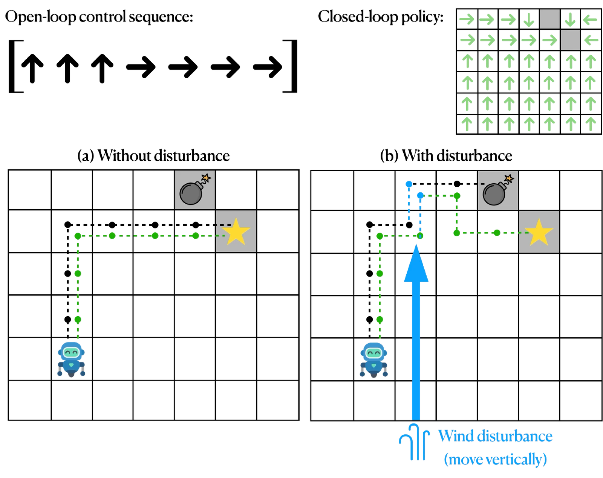
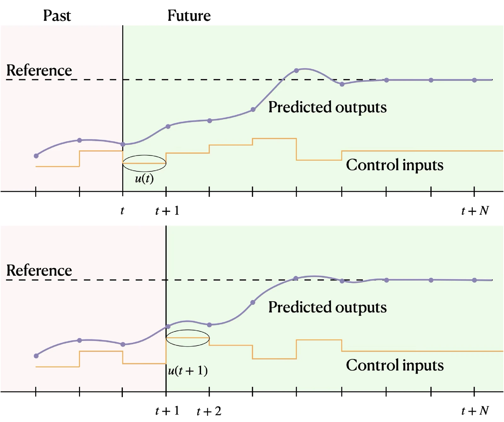

闭环控制与轨迹跟踪
第 2 章把轨迹优化作为开环最优控制的基础工具做了介绍：其目标是计算一条以时间参数化的控制序列，在满足系统动力学与约束的前提下最小化给定的代价函数。在机器人的自主性技术栈中，开环控制往往是一个关键组成部分，为操作、运动与导航等任务生成控制序列。但开环策略只依赖时间、不依赖当前系统状态，因此天然容易受到扰动、建模误差以及执行阶段其他不确定性的影响。
本章转向闭环最优控制。问题的核心要素不变——系统动力学、状态与输入约束、性能指标——但优化的对象有本质不同：闭环控制不再求开环序列 ，而是要求出形如 的最优控制律，它除当前时间外还显式依赖当前状态。这类闭环控制律通常称为反馈控制器（feedback controller） 或控制策略（control policy）。
把最优控制问题的解写成闭环策略的形式尤其强大，因为它给出了一个从系统任意状态出发都规定最优行为的规则。在理想假设下——系统模型精确、状态完全已知、没有扰动——最优开环序列与最优闭环策略会产生完全相同的行为。但实践中这些条件很少满足：真实系统不可避免地面临模型不确定性、外部扰动与量测噪声。此时闭环策略优势明显：它不断依据实际系统状态调整控制输入，从而提供开环策略难以达到的鲁棒性（图 3.1）。
形式化地，闭环控制律定义如下：
闭环控制律是一个函数 ，它把当前状态注当完整系统状态不可直接测量时，闭环控制律可以基于当前量测到的系统输出定义，即 ，其中 表示 时刻量测到的系统输出。此时该闭环策略称为输出反馈策略（output feedback policy）。 与时间 映射为控制输入 ：
闭环控制方法尽管在理论上吸引人、实践中也有优势，其主要缺点在于计算：求解最优闭环策略通常比计算开环输入序列更昂贵。实践中一种有用的折中是采用两步设计（two-step design），把开环与闭环两种范式的长处结合起来。该方案先求解一个开环最优控制问题，得到名义参考轨迹，所用工具如第 2 章所述；然后在执行阶段设计闭环控制器来跟踪这条参考轨迹。概念上，得到的控制器把前馈项——名义轨迹——与对偏差作出反应的反馈项融合在一起。本章将更深入地讨论，这些想法正是通常所说的轨迹跟踪控制（trajectory tracking control） 的核心。

形式化地，两步设计可写为：
其中 与 表示名义输入轨迹与名义状态轨迹， 是轨迹跟踪控制律，保证在存在模型不匹配或扰动时实际轨迹仍贴近规划轨迹。
在这些概念之上，本章探讨闭环最优控制的关键策略及其在轨迹跟踪中的应用。3.1 节从反馈控制的经典范式开始，通过广泛使用的比例–积分–微分（PID） 控制器及其在跟踪中的应用来说明，重点讨论微分平坦系统。接着3.2 节转向线性最优控制，聚焦线性二次型调节器（LQR）、它的若干重要扩展以及在线性跟踪控制中的应用。3.3 节讨论非线性最优控制问题：先介绍以闭环形式给出最优解的技术，如哈密顿–雅可比–贝尔曼（HJB）方程与动态规划（DP）；再说明在跟踪任务中如何通过线性化把线性方法推广到非线性系统。在此基础上，介绍 LQR 思想如何通过迭代 LQR（iLQR） 与微分动态规划（DDP） 等算法推广到非线性最优控制，这些算法以两步设计的形式同时产生开环轨迹与闭环跟踪控制器。最后3.4 节介绍模型预测控制（MPC），这一框架通过滚动时域优化把开环与闭环最优控制的思想结合起来，并讨论它如何用于跟踪。
经典反馈控制
经典反馈控制的核心目标是调节系统输出，使其跟踪期望的参考信号。例如在自动驾驶场景中，可能希望控制车速与目标速度一致，或与另一辆车保持特定距离。
经典反馈控制范式建立在一个简单而有力的原理上：持续量测系统输出，与期望参考比较，并依据二者的偏差——称为误差信号（error signal）——计算修正动作。修正输入随后施加到系统上，使输出不断朝期望行为调整。例如，车速低于目标就加速，高于目标就减速。
经典反馈控制器通常按一组基本要求设计：
- 稳定性（stability）：控制器应保证系统保持稳定。稳定性有若干形式化定义，但本质要求大致是系统“行为有界”。
- 跟踪（tracking）：控制器应最小化系统输出与期望参考之间的误差，使系统尽可能贴近指令轨迹。
- 扰动抑制（disturbance rejection）：控制器应衰减外部扰动与量测噪声的影响，使系统性能在意外输入下基本不受影响。
- 鲁棒性（robustness）：控制器应在系统模型或参数存在不确定性时仍有良好表现，保证在不同工况下可靠运行。
这一反馈原理支撑了控制工程中许多广泛使用的策略，其中最简单也最常被采用的是比例–积分–微分（PID）控制器注PID 控制最自然的表述对象是单输入单输出（SISO）线性系统，此时误差信号是标量。推广到多输入多输出或非线性系统是可能的，但往往依赖启发式整定，给出的保证也更弱。。尽管概念简单，PID 经受住了时间检验，至今仍是控制工程的主流工具——从调节工业炉温度到稳定无人机飞行。
PID 控制的结构
PID 控制器把控制输入算作由跟踪误差 导出的三项的加权组合，其中 表示期望参考， 表示量测输出：
三项各有互补的作用：
- 比例项（P）：对偏差立即响应，产生与当前误差成比例的控制作用。
- 积分项（I）：累积过去的误差，把稳态误差驱动到零。
- 微分项（D）：通过响应误差的变化率预测未来趋势，改善瞬态行为并抑制振荡。
通过调整增益 ，可以塑造控制器对扰动的响应强度、消除偏差的速度，以及逼近参考轨迹的平滑程度注PID 控制器的整定并不简单，Ziegler–Nichols 等启发式规则提供了系统化选取增益的起点，但实践中往往还需要进一步微调。。PID 控制器的结构见图 3.2 的框图。PID 控制在工业界无处不在，原因正是这种简单性：只需有限的实现工作与适中的计算资源即可部署，因而对嵌入式系统很有吸引力。
为说明 PID 类控制的工作机理，考虑动力学为下式的双积分器系统：
其中 。假设控制目标是把 调节到原点。形如下式的比例–微分控制器：
得到闭环动力学：
这里用到了 。该系统的特征值为：
因此稳定性要求选取 与 使这些特征值的实部为负，即 、注注意，仅用比例控制器（）不能让系统稳定：此时特征值至多是纯虚的，系统响应会是无阻尼振荡。。适当整定 与 ，可以在收敛速度与超调、振荡、对量测噪声的敏感度之间权衡。例如可以把比例增益 取到很大，以驱动状态快速收敛到原点。但实践中过大的增益往往会放大量测噪声，使控制器表现变差。例如比例增益 很大时控制器可能引入振荡，而微分增益 过大会增加阻尼，却也可能拖慢系统响应。
除 PID 与 PD 控制之外，经典控制理论还提供了丰富的分析与设计工具。这些方法多在频域中展开注频域分析用拉普拉斯变换把系统动力学表示为代数关系——称为传递函数——而不是微分方程。，其中伯德图（Bode plot） 与奈奎斯特稳定性判据（Nyquist stability criterion） 等工具为评估与塑造系统行为提供了有力手段。关于这些主题的深入讨论，可参阅 Aström and Murray (2009)注1. Aström, K. J., Murray, R. M. Feedback Systems. Princeton University Press, 2009.。
PID 控制在跟踪问题中的应用
尽管 PID 控制器最常与调节任务联系在一起（如示例 3.1.1 所讨论），3.1.1 节引入的同一结构也可用于轨迹跟踪，此时目标是跟随一条时变的名义轨迹。在这种场合，参考信号 随时间演化，控制器力图在整个运动过程中最小化瞬时跟踪误差 。把 PID 框架这样直接使用，对缓慢变化或平滑轨迹这类简单场景可以表现得不错，但它很大程度上仍是启发式的：需要针对每个具体任务与系统临时设计与整定增益。因此基于 PID 的跟踪往往脆弱、泛化性差，即使问题设置只有轻微变化，性能也会下降。不过有一类重要系统可以把 PID 类控制系统地、有效地用于跟踪：微分平坦系统。
如前所述，微分平坦为计算开环控制序列提供了强大框架。回顾一下，状态为 、输入为 的系统：
称为微分平坦的，若存在函数 使得：
其中 表示 的第 阶导数，并且系统的状态与输入都能表示为平坦输出 及其有限阶导数的代数函数：
这一结构性质意味着：一旦平坦输出 已知，整个系统轨迹就完全确定。因此实践中可以直接在平坦输出空间中设计轨迹——例如用样条插值或多项式参数化——再以代数方式重构对应的状态轨迹与控制轨迹，无需对系统动力学做积分。
第 2 章关注的是利用微分平坦做开环轨迹生成，这里要强调这类系统同样天然适合轨迹跟踪。特别是，微分平坦能把非线性系统的轨迹跟踪问题化归为平坦输出空间中的线性跟踪问题，从而可以套用 PID 等经典控制方法。
微分平坦系统还有一个特别好用的性质：它们可以被反馈线性化（feedback linearization），在平坦输出空间中得到线性系统。具体地，给定平坦输出为 的微分平坦系统，存在整数向量 使得：
并且系统动力学可以等价地写成如下形式的线性系统：
其中 是虚拟控制输入，可通过代数关系与原始系统输入 联系起来注关于微分平坦系统反馈线性化的详细讨论，可参阅 Levine (2009) 与 Murray (2009)。。式 (3.5) 的线性系统可以用 PID 控制等标准线性控制技术有效地控制。
具体地，给定参考平坦输出轨迹 ——例如由任意开环方法算出——及其对应的虚拟输入轨迹 ，可以定义逐分量的跟踪误差：
由此得到误差动力学：
为保证跟踪误差收敛到零，可选如下控制律：
把它作用于式 (3.5) 的系统，得到如下闭环动力学：
由构造有 ，于是跟踪误差动力学为：
其中增益 按稳定性要求选取。
该过程把非线性轨迹跟踪问题有效地化为若干解耦的线性跟踪问题，每个平坦输出一个，可用标准线性控制技术求解。下面用一个具体例子说明。
考虑前文引入的动态扩展独轮车模型：
其状态为 ，控制输入为 。该系统以 为平坦输出，是微分平坦的，其动力学可写为：
其中 是表示平坦输出加速度的虚拟控制输入，从而把系统化为式 (3.5) 的形式。
于是给定参考轨迹 ，可以针对 设计反馈律以保证跟踪期望轨迹。具体地，可选如下 PD 型虚拟控制：
其中控制增益 。在该控制律下，笛卡尔跟踪误差满足二阶线性微分方程：
从而保证跟踪误差 指数收敛到零。
最后，假设雅可比矩阵 可逆，相应的控制输入 可由下式代数求出：
于是，平坦输出空间中一个概念上简单的 PD 控制律，就转化为原系统的非线性状态反馈律。
线性系统的最优闭环控制
经典反馈控制器尽管使用广泛、实践上有吸引力，却缺少以数学方式量化并优化性能的系统方法。如第 2 章所述，现代控制理论通过把控制器设计表述为显式优化问题来解决这一点。
本节聚焦线性二次型设定注即系统动力学是线性的、代价函数是二次的。，它是闭环最优控制中最优雅、适用面最广的框架之一。我们以线性二次型调节器问题为核心，先给出其无穷时域、连续时间的形式；然后讨论该框架的若干重要扩展——如有限时域、离散时间与时变形式——并说明如何把它用于线性跟踪问题。
线性二次型调节器
线性二次型调节器（LQR）为调节问题提供了有原则的解法，其主要目标是把线性系统的状态驱动到原点，同时以最优方式在状态偏差与控制代价之间权衡注这一设定初看可能显得局限，但本章后文会看到，该表述可自然推广到大量实践上重要的问题。。形式化地，考虑线性时不变（LTI）系统：
其中 与 是常数矩阵。目标是确定控制策略 ，使二次代价泛函最小：
其中 是对称半正定矩阵，惩罚状态偏离原点； 是对称正定矩阵，惩罚控制代价。于是 LQR 问题的无穷时域形式可表述为如下最优控制问题：
假设 对可镇定（stabilizable）、 对可检测（detectable）注这些假设保证无穷时域 LQR 问题存在唯一的镇定解。形式化定义与证明可参阅 Murray (2009) 与 Bertsekas (2000)。，则 LQR 问题有唯一最优解，形式为定常线性状态反馈控制器：
其中最优增益矩阵 为：
这里 是连续时间代数黎卡提方程（continuous-time algebraic Riccati equation） 的唯一半正定解：
黎卡提方程可由变分法推出——通过第 2 章介绍的庞特里亚金最大值原理——也可由动态规划借助哈密顿–雅可比–贝尔曼方程推出注两种推导都得到黎卡提方程与相同的最优线性反馈律。关于这两种方法的深入处理可参阅 Bertsekas (2000)。。把式 (3.11) 的最优闭环策略代入式 (3.8) 的系统动力学，得到闭环系统：
该闭环系统保证渐近稳定，即矩阵 的特征值实部严格为负。因此 LQR 为调节问题给出了直接的做法：求解黎卡提方程注实践中代数黎卡提方程的解用标准化软件包数值求解，常见实现有 Python 的 scipy.linalg.solve_continuous_are 与 MATLAB 的 icare。，计算最优增益矩阵 ，再施加反馈律 。
作为具体例子，算法 3.2.1 演示了如何为动力学为 的简单双积分器系统计算最优无穷时域 LQR 控制器。
import numpy as np
from scipy.linalg import solve_continuous_are
# System dynamics matrices for simple double integrator ẍ = u
A = np.array([[0, 1], [0, 0]])
B = np.array([[0], [1]])
# Define cost function matrices
Q = np.array([[1, 0], [0, 1]])
R = np.array([[1]])
# Solve the continuous algebraic Riccati equation
P = solve_continuous_are(A, B, Q, R)
# Compute optimal feedback gain matrix
K = -np.linalg.inv(R) @ B.T @ P
# Verify eigenvalues are negative (closed-loop system is stable)
eig_val, eig_vec = np.linalg.eig(A + B @ K)
print(eig_val)算法 3.2.1： 用 solve_continuous_are 求解连续代数黎卡提方程并计算最优反馈增益矩阵。
代价矩阵的设计
LQR 设计中的一个核心问题是如何选取代价矩阵 与 ，因为它们决定状态调节与控制代价之间的权衡，从而塑造整体闭环性能。为使解存在，矩阵须满足 与 。为简化讨论，进一步假设 。与上面给出的可镇定性、可检测性假设一起，这保证代数黎卡提方程存在唯一的镇定解。实践中 与 的具体选择取决于设计者对系统动力学与性能目标的理解。一种特别简单且常用的做法是使用对角权重矩阵，让每个对角元直接惩罚对应的状态或控制变量：
其中 、 对所有 与 成立。这样每个对角元直接指定对应状态或输入（的平方项）在总代价中的权重。一般地，对调节特别重要的状态（等价地，控制输入）赋予较大权重，使这些方向上的偏差被更重地惩罚；反之，次要的状态或输入赋予较小权重，反映它们对系统整体性能影响较小。
有限时域形式
LQR 表述可自然推广到有限时域设定，只在固定时间区间 上评估性能。此时最优控制问题可写为：
其中 与 是对称半正定矩阵， 是对称正定矩阵。矩阵 指定终端代价，惩罚末端时刻 状态偏离原点。
与无穷时域情形一样，最优控制律保持线性形式 ，但增益矩阵变为时变的。具体地，最优增益矩阵 为：
其中 是连续时间微分黎卡提方程（continuous-time differential Riccati equation） 的半正定解：
终端条件为 。
当时域长度 趋于无穷，且在无穷时域情形引入的标准假设下——即 可镇定、 可检测、、——微分黎卡提方程的解 收敛到式 (3.13) 代数黎卡提方程的稳态解 ；相应地，时变增益矩阵 收敛到式 (3.12) 的常数增益矩阵 。实践中当时域足够长时，通常直接使用无穷时域增益，从而不必计算或存储整条增益调度 。
离散时间 LQR
以上讨论的都是连续时间形式。但有限时域与无穷时域问题同样可以自然地写成离散时间形式，此时系统按差分方程演化：
并且如第 2 章所述，时域 被离散为 个区间 ，每段长度 。在这种设定下，最优解的结构与连续时间情形一致：最优状态反馈律仍是状态的线性函数 ，增益通过求解黎卡提方程得到——此时是离散形式。
具体地，离散时间的有限时域问题写为：
其中 、、。最优解由反向黎卡提递推得到：从终端条件 出发，对 按如下方式反向迭代：
相应的反馈增益为：
该递推可看作把连续时间微分黎卡提方程从 反向积分到 的离散时间类比。每一步把 往前推进一个阶段，实际上是让未来代价信息沿时间反向传播，以确定最优闭环策略。
在无穷时域设定下，问题写为：
其中 、。与连续时间情形类似，在标准的可镇定性、可检测性条件下，当时域长度 趋于无穷时，反向黎卡提递推收敛到稳态矩阵 ，它满足离散时间代数黎卡提方程（discrete-time algebraic Riccati equation）：
相应的最优反馈增益则是时不变的：
可见 LQR 解的整体结构可以无缝搬到离散时间，但计算方式变了：不再求解连续时间的微分或代数黎卡提方程，而是在有限时域上做反向递推（有限情形），或求解一个不动点方程（无穷情形）。这种递推视角也与动态规划的原理紧密一致；动态规划是最优控制与强化学习的基础概念，后文会详细讨论。
下面用离散时间表述汇总 LQR 问题的若干关键扩展。
时变 LQR 与交叉二次代价
现在考虑同时具有时变动力学与交叉二次代价项的有限时域离散时间 LQR 问题：
其中 ，、、 是时变代价矩阵。系统矩阵 与 也显式依赖时间，以刻画非定常动力学。该表述通过引入交叉项矩阵 扩展了标准 LQR 问题，用于惩罚状态与控制的交互。当施加某个控制动作的代价取决于当前系统状态时，这类项自然出现。例如在车辆控制场景中，施加制动力的代价可能随车速变化。
最优解仍保持线性反馈形式 ，其中：
矩阵 由反向黎卡提递推得到：
终端条件为 。
仿射动力学与二次、线性代价下的 LQR
现在考虑更一般的离散时间 LQR 表述：动力学为仿射形式，代价中同时含二次、线性与常数项。令 、、。代价函数为：
受仿射动力学约束：
最优控制策略可用动态规划导出，得到时变仿射闭环控制律注本节只引用结论而不作证明；关于各种 LQR 扩展最优解的详细推导，可参阅 Bertsekas (2000)。。为简化记号，定义如下中间量：
最优律对状态仍是仿射的：
其参数由如下递推给出：
这一仿射–二次型表述通过容纳仿射动力学与非齐次代价项，推广了经典 LQR。本章后文会看到，该表述在把 LQR 技术推广到非线性系统时起核心作用：在那里，通过对动力学与代价函数做线性化与二次近似，这类仿射与交叉线性结构会自然出现。
总之，LQR 框架是线性系统在二次代价下做闭环最优控制的有力工具。下面会看到，LQR 背后的原理可以推广以处理更复杂的场景，包括轨迹跟踪与非线性动力学。
线性跟踪问题
如上一节所述，LQR 框架为调节问题提供了有原则的解法，其目标是把系统状态驱动到原点。但在许多实际场合，任务远不止调节：机械臂必须跟随预先规划的运动，自动驾驶汽车必须依次通过路点，工业系统常常围绕时变设定点运行。这些场景中的控制目标是轨迹跟踪而非调节。因此，把控制设计局限于围绕原点的调节，对许多真实应用往往不够。
跟踪问题可以自然地放进前面式 (3.2) 引入的两步设计范式中。第一步求解一个开环最优控制问题，得到名义状态–控制轨迹：
它满足系统动力学并优化给定的性能指标注这些名义轨迹通常用第 2 章讨论的轨迹优化方法计算。。第二步设计闭环控制器，保证实际系统轨迹贴近该名义轨迹，补偿扰动、建模误差与量测噪声。
形式化地，考虑线性系统：
令 表示希望跟踪的名义轨迹，它满足同样的动力学，即：
定义偏差（或误差）变量为：
它们表示实际状态与控制输入相对名义值的差。利用式 (3.34) 中 的定义，并代入相应方程中的动力学，可导出偏差变量的动力学：
它们与原系统具有相同的线性结构，只是改用偏差变量表述。这一观察很关键：它使 LQR 技术可以直接用于跟踪问题。
用于跟踪的 LQR 表述
跟踪性能可以自然地用偏差变量上的二次代价表达：
其中 、、 是权重矩阵，惩罚状态与控制相对名义值的偏差。于是跟踪问题可写成有限时域最优控制问题：
它正是 3.2.1 节引入的有限时域 LQR 问题，只是改用偏差变量表述。因此针对有限时域 LQR 得到的全部结果都直接适用于该跟踪表述，最优控制律形如：
其中 是由式 (3.16) 微分黎卡提方程解出的时变最优反馈增益。
最后，代入式 (3.34) 中偏差变量的定义，得到用原始状态与控制变量表述的最优控制律：
该式是两步设计范式的清晰实例：控制输入由前馈项 （来自名义轨迹）与反馈项 （主动补偿实际状态相对名义轨迹的偏差）组成。
非线性系统的最优闭环控制
上一节聚焦线性系统，LQR 框架为这类系统给出了优雅的闭式解。然而许多真实系统本质上是非线性的，因此把最优闭环控制推广到非线性动力学，对大量实际应用至关重要。
本节先简要梳理动态规划与 HJB 方程这两种推导全局最优闭环控制律的基础方法（见 3.3.1 节），更深入的讨论参见相关章节与 Bertsekas (2000)注8. Bertsekas, D. Dynamic Programming and Optimal Control. Athena Scientific, 2000.。随后转向另一类思路：利用线性最优控制的结构与洞察来求解非线性最优控制问题。在轨迹跟踪方面，先说明线性化（linearization）这一概念如何使 LQR 跟踪技术可用于非线性系统（3.3.2 节）。最后，把线性化与 LQR 的思想推广，得到在两步设计形式下同时生成开环轨迹与闭环跟踪控制器的算法，即 3.3.3 节的 iLQR 与 DDP。
动态规划与 Hamilton–Jacobi–Bellman 方程
推导非线性系统的最优闭环控制策略时，通常区分两种互补的表述：离散时间与连续时间。
离散时间下的主要工具是动态规划（dynamic programming），由 Richard Bellman 在 1950 年代提出。动态规划为求解带有可加代价函数与非线性动力学的最优控制问题提供了系统化框架，也是众多经典与现代最优控制算法（包括许多基于学习的方法）的基础注例如相关章节讨论的强化学习算法。。直观地说，动态规划把优化问题分解为一系列更小的子问题，并利用最优性原理（principle of optimality）递归求解：若一串决策是最优的，则该最优序列的尾部对尾部子问题也是最优的。这种递归结构导出著名的贝尔曼方程（Bellman equation），它把全局优化问题转化为一系列可处理的小规模优化问题，从而大幅简化最优策略的搜索。
连续时间下的对应表述是 HJB 方程。HJB 方程是一个非线性偏微分方程，其解可用于导出最优控制律。概念上，它刻画了动态规划原理的无穷小版本，给出最优性的连续时间刻画。
离散时间动态规划范式与连续时间 HJB 方程都为非线性系统推导全局最优闭环策略提供了强大且有理论依据的途径。但二者都面临严峻的计算挑战，例如维数灾难（curse of dimensionality），这限制了它们直接用于高维系统。
受动态规划原理启发的实用方法将在相关章节进一步展开；关于 HJB 框架的深入讨论，参见 Bertsekas (2000)注9. Bertsekas, D. Dynamic Programming and Optimal Control. Athena Scientific, 2000.。
非线性跟踪控制的线性方法
控制非线性系统的常见策略是在局部用线性系统近似其动力学，再套用线性控制技术，例如 3.2.2 节的 LQR 跟踪。用线性系统近似非线性系统的过程称为线性化（linearization），它利用了任何光滑非线性函数都可在局部用一阶泰勒展开近似的性质。下面先介绍线性化过程，再说明如何对得到的线性化系统应用 LQR 跟踪。
非线性系统的线性化
考虑非线性系统动力学：
其中 是支配系统演化的光滑非线性函数。设 表示满足该动力学的标称状态与控制轨迹，即：
就轨迹跟踪而言，我们希望控制该系统使其保持在这条标称轨迹附近，也就是让状态偏差 很小。与线性情形一样（见 3.2.2 节），先推导这些偏差变量的动力学，再设计控制器把它们镇定到零。
利用式 (3.40)，偏差动力学可写为：
为近似右端项，可在标称轨迹附近对非线性函数 做线性化。具体来说，假定偏差 与 都很小，对 做一阶泰勒展开得到：
其中 与 是 对状态与控制输入的雅可比矩阵，在标称轨迹上、即在 处取值。
把式 (3.42) 的近似代入式 (3.41)，得到：
由此得到偏差变量的线性化动力学：
对线性化系统应用 LQR 跟踪
一旦写成这种形式，就可以直接套用标准线性控制技术（例如 LQR 跟踪框架）来设计把偏差动力学镇定到零的反馈控制器。例如，套用 3.2.2 节的有限时域 LQR 跟踪框架，得到最优反馈律：
换回原始变量，即得闭环控制器：
其中 是求解线性化系统对应的微分黎卡提方程得到的时变反馈增益。
在平衡点附近线性化
一个特别重要的特例是标称轨迹为常值平衡点 的情形。若存在控制输入 （称为平衡输入）使 ，则称状态 为平衡点（equilibrium）。换言之，若系统从 出发，且对所有 施加常值输入 ，状态将永远停在 不动。在 处线性化得到的系统具有式 (3.44) 的形式，其中 与 是在平衡点处取值的常值矩阵（不再时变）。
线性化的局部有效性
需要强调，线性化只提供局部近似：线性化模型只在标称轨迹的邻域内准确刻画系统动力学。若状态明显偏离 ，线性近似可能不再成立，所得控制器可能表现很差，甚至使系统失稳。
下面用一个具体例子说明线性化过程。
图 3.3：倒立摆由固定在长度为 的刚性杆末端的质点 组成，运动用相对竖直向上方向的角 描述， 表示绕支点施加的控制力矩。
考虑图 3.3 所示的倒立摆，其非线性动力学为：
其中 为质量， 为杆长， 为重力加速度， 为摆角， 为控制力矩。引入状态向量 ，系统可写成状态空间形式：
竖直静止位置 是该系统的平衡点，对应平衡控制输入 。在该平衡点附近线性化——此时 、——得到线性模型：
其状态矩阵有一个实部为正的特征值，因此是不稳定的。
为使倒立摆稳定，可设计如下比例-微分（PD）控制器：
对应的闭环动力学为：
选取合适的增益 与 ，就能让闭环系统的两个特征值都具有负实部，从而保证在竖直位置附近的稳定性——这与示例 3.1.1 中双积分器的 PD 设计类似。当然，PD 控制只是其中一种选择，其他方法（例如 LQR）同样可以用于线性化模型。
算法 3.3.1 给出用 JAX（一个支持高性能数值计算与自动微分的库）实现倒立摆线性化过程的 Python 代码。
import jax
import jax.numpy as jnp
def inverted_pendulum_dynamics(x, u, g=9.81, m=1, l=1):
"""Evaluate the inverted pendulum dynamics."""
θ, dθ_dt = x
dx_dt = jnp.array([dθ_dt, (g/l)*jnp.sin(θ) + (1/m*l**2)*u])
return dx_dt
# Linearize around the stationary upright position with zero
# control (i.e. the pendulum is perfectly balanced)
f_jac = jax.jacobian(inverted_pendulum_dynamics, argnums=(0, 1))
x = jnp.array([0., 0.])
u = 0.
A, B = f_jac(x, u) # Evaluate Jacobian at equilibrium point迭代 LQR（iLQR）与微分动态规划（DDP）
前几节我们看到，LQR 框架及其各种扩展为调节与跟踪提供了有原则的基础，同样的思想既能用于线性系统也能用于非线性系统。特别地，我们指出 LQR 可以自然地嵌入两步设计范式：把开环轨迹生成与闭环跟踪控制结合起来，作为直接求解完整非线性最优控制问题的一种实用替代方案。
本节换一个不同但互补的视角，探讨如何把线性化与 LQR 的思想推广，得到在两步设计形式下同时生成开环轨迹与闭环跟踪控制器的算法。由此得到两个密切相关的算法：迭代线性二次调节器（iterative linear quadratic regulator, iLQR）与微分动态规划（differential dynamic programming, DDP）。下面会看到，两种方法的核心洞察相同：使 LQR 易于处理的那种结构——二次代价与线性动力学——可以嵌入迭代优化方案，从而高效处理非线性动力学与非二次代价。
迭代 LQR
回顾 3.2.2 节的 LQR 跟踪问题：控制器的作用是把偏差变量 驱动到零，从而使系统跟踪给定参考。iLQR 的核心用的是同一套机制，但目标不同：不是把偏差变量驱动到零，而是用最优偏差去修改标称轨迹本身。重复这一过程，iLQR 逐步改进轨迹，直到无法进一步改善，从而得到局部最优解。
形式上，考虑离散时间有限时域非线性最优控制问题：
给定可行标称轨迹 ，在标称轨迹附近对动力学做线性化、对代价做二次化：
其中 是海森矩阵， 是代价对状态与输入的梯度，均在 上取值。这样问题就化归为式 (3.27) 引入的 LQR 形式，可用黎卡提方程求解，得到最优偏差 。
iLQR 交替执行两个互补步骤：
- 反向传播（backward pass）： 在 附近线性化动力学、二次化代价，求解得到的 LQR 问题，得到偏差变量的仿射控制律：
- 前向传播（forward pass）： 从初始条件 出发，用下式把非线性系统向前推演：
并把标称轨迹更新为 。
重复上述步骤直到轨迹收敛，通常以代价改善可忽略或控制序列变化很小作为判据。
实践中的注意事项
iLQR 为轨迹优化提供了强大的框架，但其性能在很大程度上取决于若干实现细节：
- 局部最优性。iLQR 给出的解只是局部最优的。所得开环轨迹 只在初始猜测的邻域内最小化代价，相应反馈律也只能在局部镇定系统。因此，标称轨迹的良好初始化往往是成功的关键。
- 二阶项。代价的二次展开引入二阶项 与 ，它们一般未必分别半正定与正定。为保证黎卡提递推适定，通常对这些项做正则化使其可逆，例如加上单位矩阵的倍数（、，），或把它们投影到最近的合法矩阵。
- 终止准则。由于 iLQR 是迭代算法，必须定义停止规则。实践中，当控制轨迹的变化足够小，或相邻迭代之间的代价改善低于给定阈值时，迭代终止。
- 前向传播的稳健性。前向传播过程中要小心，避免更新后的轨迹偏离线性化所用的轨迹太远。常见策略是对大幅偏离施加更重的惩罚，或对更新控制与状态所用的步长做线搜索。
这些考虑对实践中获得稳健、高效的性能至关重要。关于 iLQR 的完整技巧汇总与详细数学处理，可参见 Tassa (2011)注10. Tassa, Y. Theory and Implementation of Biomimetic Motor Controllers. PhD Thesis. The Hebrew University of Jerusalem, 2011.。
微分动态规划
与 iLQR 密切相关的是 DDP，这一算法同时植根于 LQR 与动态规划注在 3.3.1 节引入，并将在相关章节进一步讨论。。与 iLQR 一样，DDP 也在反向传播（计算局部最优增益）与前向 rollout（更新轨迹）之间交替。关键差别在于反向传播的处理方式。iLQR 把动力学线性化到一阶，因此所得表述只包含来自代价函数的二阶项；DDP 还把动力学展开到二阶，使非线性动力学的曲率信息显式进入黎卡提递推。
形式上，与式 (3.29) 给出的解相比，DDP 给矩阵 、、 增加了额外的二阶项：
实践中，这种更丰富的近似往往能改善收敛性与解精度，在强非线性系统中尤其如此。但它也使 DDP 的计算代价高于 iLQR，因为每次迭代都要计算并存储动力学的二阶导数。
模型预测控制（MPC）
下面转向模型预测控制（model predictive control, MPC），也称滚动时域控制（receding horizon control, RHC），它已成为现代控制中理论与实践上最具影响力的方法之一。为理解其作用，有必要回顾开环控制与闭环控制的区别。
开环表述把控制问题提成：在系统约束下寻找使给定性能指标最优的轨迹 。这在概念上简单、计算上也更省，但它不考虑执行过程中可能出现的扰动或对标称轨迹的偏离。
相比之下，闭环控制通过反馈策略直接把测量状态映射为控制作用。这种设计使控制输入能够适应当前系统状态。但计算最优反馈策略很快就会变得难以处理，即使对中等规模的系统也是如此注前面介绍的 PID 控制器与 LQR 是计算高效的闭环控制例子，但这些方法局限于相对简单的场景，例如带二次代价的线性系统。更一般的情形往往很快变得计算上不可行。。
从高层看，MPC 可视为对这两种范式的有原则的统一：用反复求解开环优化来有效实现闭环行为。每个时间步，MPC 求解一个有限时域开环最优控制问题，得到输入序列 。只施加第一个控制作用 ，随后时域向前平移、重新测量状态、再次求解优化。这种滚动时域策略把反馈嵌入开环优化，兼具闭环自适应的稳健性与开环规划的计算可行性。
自然地，MPC 需要额外的设计要素来保证可靠运行。两个关键问题是持续可行性（persistent feasibility，保证每一步都能找到可行解）与稳定性（stability，保证闭环系统随时间表现良好）。这些问题通常通过终端约束、定制的终端代价或其他针对具体问题的设计选择来处理，本节后面会回到这一点。
从历史上看，MPC 于 1970 年代出现在过程控制领域，尤其是化学工程中。这一应用场景之所以理想有两个原因。第一，安全攸关的约束（例如温度上限）可以在优化问题中被显式强制执行。第二，化工过程的时间尺度相对较慢，有充足时间在线求解优化问题——即使按当时的计算能力也够用。在今天的硬件上，这些限制基本消失，MPC 已部署到机器人等实时领域，数值优化问题可以在数十甚至数百赫兹的频率下求解。
今天，MPC 被视为现代控制的基石之一。与 PID 控制和 LQR 并列，它是最广泛应用的方法之一，其价值在于能在保持稳健性的同时显式处理约束。本节内容提供了理解与实现 MPC 所需的基础。希望更深入了解理论与实践细节的读者，可参阅 Borrelli 等（2017）注11. Borrelli, F., Bemporad, A., Morari, M. Predictive Control for Linear and Hybrid Systems. Cambridge University Press, 2017.与 Rawlings 等（2017）注12. Rawlings, J., Mayne, D.Q., Diehl, M. Model Predictive Control: Theory, Computation, and Design. Nob Hill Publishing, 2017.的教材。
滚动时域框架

MPC 的基本设定是离散时间无限时域最优控制问题。也就是说，原则上我们希望设计一个反馈策略，使无限时间范围上累积的代价最小，即终止时间 。但在这种设定下求解闭环策略通常是不可处理的。
MPC 用一种次优但计算可处理的近似来应对这一挑战：它不直接求解无限时域问题，而是反复求解有限时域最优控制问题。这一想法很简单，如图 3.4 所示。在当前时刻 测量系统状态，在长度为 的时域上计算最优控制序列。与任何开环表述一样，优化依赖系统模型预测候选输入序列下状态将如何演化，并选出使有限时域代价最小的那个。这一过程给出一串控制输入：
以及相应的预测状态轨迹。关键在于，只有第一个控制输入 会被施加到系统上。时间推进到 后，其余输入 被丢弃，并基于更新后的状态测量重新求解一个新的优化问题。该过程随后递归地重复。
这一方案常被称为滚动时域框架：时域随时间“向前移动”，每一步都基于最新的状态信息求解新的优化问题。丢弃控制轨迹中未使用的部分看似浪费，但正是这一点让 MPC 能够吸收更新的测量与扰动，把反馈嵌入过程之中。
如果有限时域问题被仔细设计与调参——通过合适的时域长度、终端代价或约束——MPC 的闭环行为就能很好地逼近真正的无限时域最优控制器。实践中，MPC 常常达到与无限时域最优解几乎无法区分的性能，同时保持计算可行。
基本形式
为把上面引入的想法形式化，考虑离散时间线性时不变（LTI）系统：
其中 与 分别表示状态与输入向量。二者都受如下形式的约束：
其中 与 是描述容许状态与容许输入的凸多面体集合。
在时刻 ，给定测量状态 ，MPC 在长度为 的预测时域上计算输入序列：
其中记号 表示“在时刻 预测的、将在时刻 施加的输入”。相应地，把预测状态轨迹记为：
有限时域问题
控制输入通过求解有限时域最优控制问题得到：
其中 表示决策变量序列 ， 是终端集，函数 与 分别表示阶段代价与终端代价。
控制律
只把最优输入序列的第一个元素施加到系统：
其中对 的依赖来自式 (3.52) 的优化问题带有条件 。到下一步 时重新测量状态，并用更新后的信息再次求解问题（式 (3.52)）。这一迭代过程定义了滚动时域控制律，把反馈嵌入整个过程。
闭环动力学
所得闭环系统可紧凑地写为：
其中 是时刻 的 MPC 反馈律。由于动力学、代价与约束都是时不变的，该问题也可以等价地通过固定初始时刻 来写。形式上，令 与 ，可把式 (3.52) 的问题改写为：
这种形式在分析时往往更方便，因为不必在条件 中一直携带显式时间下标。
典型代价函数
实践中，MPC 问题常由如下二次型阶段代价与终端代价定义：
其中 、、。由此得到总的代价函数：
二次代价不仅自然，而且与多面体约束配合时会导出凸优化问题。为提升控制作用的稳健性或稀疏性，有时也使用 或 等其他范数注例如，在存在执行器限制的系统的预测控制中常用 惩罚，或用来诱导稀疏执行。。
实现中的挑战
MPC 提供了强大的框架，但也带来两个关键的实现挑战：
- 1. 持续可行性。即使优化问题在当前时间步可行，也不能保证未来仍然可行：所选输入可能把系统驱入状态空间中不存在容许解的区域。当控制器未能充分“向前看”以维持长期可行性时，就会出现这种情况。例如，一辆自动驾驶汽车高速驶向障碍物，而 MPC 控制器因为时域短视选择过晚刹车，结果汽车可能进入无法及时停车避撞的状态，导致后续控制步不可行。
- 2. 闭环稳定性。仅可行并不保证闭环轨迹收敛到原点。事实上，MPC 律完全可能产生满足约束的容许控制输入，却无法镇定系统。
这些问题凸显了一个根本张力：MPC 基于求解短时域问题，而我们最终需要有效的长期行为。一个只看 步的策略，如何能在可能无限的时域上同时保证可行性与稳定性？
一个核心洞察是：这些性质可以通过适当设计终端代价与终端约束集来强制实现——即式 (3.52) 中的 与 。粗略地说，终端代价充当问题无限时域尾部的替代品，终端集则保证系统留在一个行为已知且可控的区域。这些设计选择合在一起，构成一种灵活的工具，用来调和 MPC 的短视性与我们真正关心的长期保证。
虽然完整处理这些问题超出本书范围，我们建议感兴趣的读者参阅 Borrelli 等（2017）注13. Borrelli, F., Bemporad, A., Morari, M. Predictive Control for Linear and Hybrid Systems. Cambridge University Press, 2017.以获得全面讨论与严格处理。
跟踪型 MPC：增量输入 形式
MPC 一个特别常见的用途是参考跟踪：目标是让系统状态随时间跟踪参考轨迹 。这里 可以是全状态参考（此时 ），也可以是部分输出参考（）。本节介绍 形式注18. Borrelli, F., Bemporad, A., Morari, M. Predictive Control for Linear and Hybrid Systems. Cambridge University Press, 2017.，它在轨迹跟踪以及围绕非零工作点的调节任务中尤为有利。
形式上，考虑如下 LTI 系统：
其中 表示控制输入相对上一时间步的变化量， 表示时刻 的系统输出， 是把状态映射到输出的线性变换。假定 可控，通常希望用控制增量而非绝对控制输入来参数化优化问题。控制器不直接优化输入 ，而是优化它们的增量：
并递归地重构实际输入：
其思路是：一旦系统到达稳态，控制输入将保持不变（即 ）。
因此，MPC 问题可以方便地改写为：
其中 与 分别表示当前状态与上一次施加的控制输入。
最终， 形式并不改变 MPC 的基本结构，只是对优化问题重新参数化，使其条件数更适合跟踪任务。
滚动时域作为实际控制的普遍原则
实践中，几乎所有最优控制的实现——无论表述为 MPC、闭环形式还是两步设计——都按滚动时域框架运行。即使标称轨迹先离线计算、再由反馈控制器跟踪，控制器通常也会在新状态信息可用时重新初始化与重新优化。换句话说，标称轨迹只是一个临时参考，随系统演化与新测量的获得而不断调整。这一视角有助于调和 MPC 与轨迹跟踪控制之间的表面区别：二者最终都依赖反复的有限时域优化与反馈，差别主要在于优化的重复频率与程度。认识到这种连续性很重要，因为它说明所谓“滚动时域”行为并非 MPC 独有，而是几乎所有追求对不确定性与扰动具有稳健性的控制架构中的实际必需。
本章小结
本章介绍了闭环控制与轨迹跟踪的策略。具体来说，我们讨论了闭环控制的目标是计算一个能持续适应当前系统状态演化的控制策略。闭环控制通常比开环方法计算负担更重，但在抗扰动、抗模型不准确与抗外部干扰方面有显著优势。
我们还通过两步设计的概念引入了一种可处理的折中：先计算开环轨迹，再用反馈控制器跟踪它。这一表述让我们自然地过渡到轨迹跟踪控制，把开环优化与闭环镇定连接起来。
在此基础上，本章给出了闭环控制与轨迹跟踪的若干关键方法。我们从经典反馈控制开始，以 PID 控制器及其在轨迹跟踪中的应用为例，特别是对微分平坦系统。接着介绍了线性最优控制方法，重点是线性二次调节器：它通过黎卡提方程为线性系统提供优雅的闭式解，并能自然地推广到跟踪问题。
然后转向非线性最优控制。我们先梳理了获得全局最优闭环解的技术——即动态规划与 HJB 方程——再说明线性化的概念如何使 LQR 可用于非线性系统的局部镇定与轨迹跟踪。在此基础上，我们讨论了 iLQR 与 DDP 等算法如何在两步设计形式下推广这些原理，同时生成开环轨迹与闭环跟踪控制器。
最后介绍了模型预测控制，它通过滚动时域策略把开环优化与闭环反馈统一起来，为实时应用中处理约束提供了通用方法。
延伸阅读
要更深入地探索本章内容，有若干关键资源。反馈控制与 PID 控制器的深入讲解见 Aström 与 Murray（2009）注14. Aström, K. J., Murray, R. M. Feedback Systems. Princeton University Press, 2009.。从动态规划角度对最优控制做严格处理（它为黎卡提方程提供理论基础）的必读参考是 Bertsekas (2000)注15. Bertsekas, D. Dynamic Programming and Optimal Control. Athena Scientific, 2000.。最后，关于模型预测控制从基本原理到高级理论与应用的全面覆盖，可参阅 Rawlings 等（2017）注16. Rawlings, J., Mayne, D.Q., Diehl, M. Model Predictive Control: Theory, Computation, and Design. Nob Hill Publishing, 2017.与 Borrelli 等（2017）注17. Borrelli, F., Bemporad, A., Morari, M. Predictive Control for Linear and Hybrid Systems. Cambridge University Press, 2017.的教材。
习题
下面各习题的初始代码可通过 GitHub 在线获取。先在终端窗口运行以下命令下载代码：
git clone https://github.com/StanfordASL/pora-exercises.git需要手写解答的习题与需要 Python 编程的习题分别用相应图标标记。
习题 1：倒立摆 PD 控制
在 notebook ch03/exercises/pid_control.ipynb 中，为倒立摆动力学实现 PD 控制器。然后尝试不同的增益 与 ，用 JAX 与 NumPy 计算闭环动力学的雅可比矩阵，验证线性化矩阵的特征值是稳定的。最后运行提供的代码，仿真非线性闭环动力学。
习题 2：小车-摆杆 LQR 控制
本题考虑小车-摆杆（cart-pole）表述：我们围绕单个静止点对动力学做线性化，设计控制器来平衡倒立摆。因此考虑一条从最终竖直状态附近出发的轨迹，最优控制是由黎卡提递推导出的闭式解。该系统有两个自由度，分别对应小车的水平位置 与摆杆的角度 （ 对应摆杆竖直下垂）。我们可以对小车施加水平推力 ，其中 对应沿 正方向的力。以状态 ，小车-摆杆系统的连续时间动力学可写为：
其中 是摆杆质量， 是小车质量， 是摆杆长度， 是重力加速度。可用固定时间步 的欧拉积分把连续时间动力学离散化，得到近似的离散时间动力学：
其中 与 分别是时刻 的状态与控制输入。本练习的代码位于 ch03/exercises/cartpole_lqr_control.ipynb。
- 1. 考虑竖直状态 与 ，定义 。在 附近对近似离散时间动力学 线性化，得到如下形式的近似 LTI 系统：
用 、、、、 表示 与 。可以利用：
我们将为该离散时间 LTI 系统设计一个镇定 LQR 控制器，求解：
其中 固定。回顾离散时间黎卡提递推迭代 次后：
代价-to-go 矩阵 与时变反馈增益 描述上述问题有限时域版本的最优 LQR 控制器。若 可镇定，这些迭代渐近收敛到某个 与 。事实上， 是任意初始状态 下的无限时域最优代价-to-go，而 是最优反馈策略，它恰好是线性且时不变的注只要 可镇定且 可检测，无限时域 LQR 问题对固定的 与 同样收敛。。
- 2. 写代码近似线性化、离散化后的小车-摆杆系统的 与 ：先令 ，然后反复应用黎卡提递推，直到按逐元素最大范数条件 收敛。取 、、、、、、。以两位小数报告 的每个元素。
- 3. 用提供的代码，以线性反馈控制器 仿真连续时间非线性小车-摆杆系统。令系统初始状态为 ，控制器采样率为 。从仿真输出验证行为如预期地稳定下来。
- 4. 下面用 LQR 控制器跟踪一条时变轨迹。具体来说，目标是让摆杆保持竖直（即 ），同时让小车位置往复运动以跟踪期望参考 ，其中 与 为已知常数。
- （a）通常如本章所述，需要在每个时间步围绕期望轨迹重新线性化系统。为什么本题不需要这样做（即为什么可以直接复用 与 ）？
- （b）对 、 重复 (c) 部分，但这次让系统从竖直位置 出发。在每个状态图上叠加参考轨迹 的对应分量。
- （c）你可能会注意到该控制器跟踪性能不好。可以试着增大状态惩罚矩阵 ，例如 。但这只会改善 与 的跟踪， 与 仍分别在 与 附近振荡。期望轨迹的什么物理特性（或缺少什么特性）导致这一现象？
习题 3：小车-摆杆起摆（iLQR）
本题实现一个求解小车-摆杆“起摆”（swing up）问题的控制器，并假定没有执行器约束。在起摆问题中，摆杆从竖直下垂开始，被摆到竖直向上位置。与小车-摆杆平衡问题不同，围绕单个静止点线性化不再足够。因此，我们把最优控制问题化为凸子问题，并从参考轨迹出发迭代求解最优扰动。由于不考虑执行能力受限的情形，每个凸子问题都可用黎卡提递推求解，即用迭代 LQR（iLQR）控制迭代地构造解。此时 iLQR 控制提供了优雅且易于实现的闭环策略。不过，借助每次迭代中的标准 LQR 表述，我们一般无法（至少不能直接）对状态或控制空间上的约束进行推理：在执行受限的情形下，需要序列凸规划（Sequential Convex Programming）提供的更灵活、更成熟的框架。本练习的代码位于 ch03/exercises/cartpole_iterative_lqr.ipynb。
回顾小车-摆杆是连续时间系统，动力学形如 。为计算 iLQR 控制律，我们考虑欧拉离散化动力学：
其中时间步 。提供的代码会把该控制律作用在原始连续时间系统上仿真。
- 1. 对给定工作点 ，设雅可比矩阵定义为：
用 JAX 在函数 linearize 中写一行代码，给定 、、 计算 与 。
我们的 iLQR 控制器使用二次代价函数：
其中 是目标状态（即竖直向上位置）。 的元素取得很大，使终端代价起到软终端“约束”的作用。
- 2. 用偏差 、、 改写代价函数。结果是一个带线性项 、、 的二次代价函数。确定向量 、、。
- 3. 补全函数 discreteIterativeLQR.solve 中的 iLQR 控制器代码。具体来说，代码必须更新控制器增益与偏置项 与 注在 3.3.3 节中我们把这些项记为 与 ，这里为避免与离散下标 混淆而改名。、标称轨迹 以及偏差 。
- 4. 实现 discreteIterativeLQR 类的函数 compute_control，根据布尔标志 closed_loop 的取值施加开环 iLQR 控制输入或闭环 iLQR 策略。对两种情况分别运行代码仿真系统，并绘制状态与控制输入随时间的变化。你应当注意到，若以开环方式施加，iLQR 控制序列无法完成任务。
习题 4：线性 MPC
3.4 节介绍了模型预测控制的一些基本方面。本练习中，你要为线性系统实现一个简单的 MPC 方案，把系统驱动到原点，同时最小化代价函数：
并满足状态与控制上的不等式约束 、、。为用有限时域 MPC 方案求解该问题，我们将使用式 (3.57) 的代价函数（它加入了终端代价），并给问题再加一个终端约束 。在 notebook ch03/exercises/linear_mpc.ipynb 中：
- 1. 实现函数 solve_mpc，求解带有上述二次阶段与终端代价、状态与控制不等式约束以及终端约束的有限时域 MPC 问题。
- 2. 运行提供的代码，用终端代价 且不加终端约束（即令 ）仿真闭环系统。分析所得曲线，解释为什么每次 MPC 迭代优化问题中算出的轨迹与最终闭环轨迹之间存在差异。
- 3. 接着运行提供的代码，把终端代价矩阵 设为线性二次调节器一节中式 (3.22) 的离散时间代数黎卡提方程（DARE）的解。你注意到每个时间步算出的 MPC 轨迹与闭环系统行为之间的差异有何变化？为什么这与 时不同？注意使用 DARE 终端代价矩阵时闭环轨迹的总代价更低，为什么？
- 4. 如 3.4 节所述，持续可行性是 MPC 的一个挑战：我们希望保证若在某个时间步找到可行解，则在未来时间步也能找到可行解。该问题的一个简单解法是施加终端约束 ，迫使优化器在有限时域末端把轨迹带到原点，从而消除短视问题。但这会使控制器次优，并可能需要更长的时域才能找到可行解。运行提供的代码，试试不同的控制器时域，闭环轨迹的代价随时域如何变化？
习题 5：扩展独轮车的轨迹跟踪控制
示例 3.1.2 介绍了动态扩展独轮车模型的闭环轨迹跟踪问题，其中我们施加 PD 控制器。该例表明，由于系统是微分平坦的，可以把其动力学写成式 (3.6) 的二阶线性系统。由这些动力学，可以为式 (3.7) 给出的虚拟输入 与 设计 PD 控制器，再用下式把这些虚拟控制代数地映射回实际控制 ：
本练习中，你要为扩展独轮车计算一条期望参考轨迹，然后设计 PD 控制器在存在外部扰动的情况下跟踪该参考。练习的代码实现部分可在 notebook ch03/exercises/unicycle_trajectory_tracking.ipynb 中完成。
- 1. 首先设计独轮车要跟踪的参考轨迹。做法有多种，本练习使用如下多项式基展开：
其中 （）是基函数， 与 是可选择的系数。使用基函数 、、、。
- （a）对系数 与 （）写出一组线性方程，以表达如下初始与终止条件：
- （b）实现函数 compute_traj_coeffs 计算系数 与 。
- （c）然后实现函数 compute_traj，用系数与基函数计算完整参考轨迹 与 。此外 compute_traj 还应计算 注提示：由动力学模型可见 。、、、、 与 。
- （d）现在实现函数 compute_controls，对给定状态轨迹计算 与 。运行提供的代码，为如下初始与终止条件计算轨迹与控制序列：
其中 。为什么必须选 ？如果在轨迹某处令 会发生什么？
- （e）运行提供的代码，用前面以开环方式算出的控制 与 在存在扰动的情况下仿真独轮车系统。注意在有噪声时系统无法到达目标状态。
- 2. 现在既然能为独轮车算出要跟踪的参考轨迹，我们希望计算一个闭环控制器，在存在扰动时稳健地跟踪该轨迹。具体来说，用式 (3.7) 的 PD 控制器计算虚拟控制 与 。
- （a）写出用虚拟控制 、 与独轮车状态 表示控制输入 与 的方程组。据此实现函数 TrajectoryTracker.compute_control。
- （b）运行提供的代码，运行闭环跟踪控制器。性能与开环相比如何？尝试不同的起止条件与不同的噪声量。